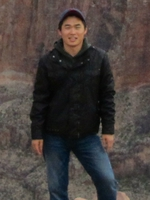
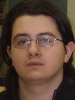
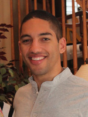
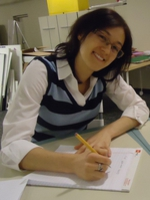

| Development Team | |
|---|---|
|
Brian Lyles
Team leader
Computer Science
3rd year
"We faced a lot of challenges during the course of this project, but once we got past them my development team stepped up and delivered a working prototype in record time." |
Ruoran Wang
Computer Engineering
4th year
"It's fun to work with a team." |
| 
Sangwon Moon
Computer Engineering
3rd year
"This project is my first group project as a transfer student in a foreign country. Even if it was hard to follow my teammates, it was really nice experience for me." |

Evgeni Kirilov
Computer Science
3rd year
"Working in a team with more than two people requires not only a good amount of communication between the different teams (and even between each team's members), but also a rigid and semi-professional structure to meetings." |
| 
Jason Blalock
Computer Science
3rd year
"Collaborating with more experienced developers is a great way to pick up new skills and languages." |
|
| Design Team | |
|
Eric Andoe
Team leader
Computer Engineering
4th year
"I learned a lot about team integration and management. It's surprising how much organization goes into being a team leader and communicating with other groups. When no one in your group is capable of answering a question it's your job to step up to the plate and take the tough questions. A little graphics design work and application development on the side doesn't hurt either." |
 Emmanuel Klu
Computer Science
2nd year
Emmanuel Klu
Computer Science
2nd year
"In the real world, things change." |
|
Kelly Castellano
Architecture
5th year
"Collaborative learning leads to better results since each person works to their own skill sets." |
Michal Williams
Architecture
5th year
"I learned how to make complex information user friendly and visually appealling according to standards set up by a client." |
| Management Team | |
|
Samantha Hoskinson
Project Leader
Chemical Engineering
4th year
"I have learned the difficulties of managing a group of all different majors and giving all groups directions." |

Darya Ivankina
Finance and Marketing
4th year
"It was a great opportunity to work within a competitive and diverse group of people that worked as one team. Sharing, discussing, and standing up for ideas were the most challenging parts." |
| Faculty Advisor | |
|
Laura Batson, Ph.D.
Instructor
Department of Humanities &
Stuart School of Business
Illinois Institute of Technology
"IPRO 320: Green Cents is an undergraduate professional project sponsored by Parsons Brinkerhoff. Our IPRO was challenged with the task of making a mobile transportation application that assists users to take the most cost efficient route and mode of transportation. GreenCents was innovated, designed and developed by the students. Many challenges arose throughout the semester, but the students rallied to develop a working prototype. The future development goals of Green Cents are to create a working mobile application that is more integrated with local transit authorities." |